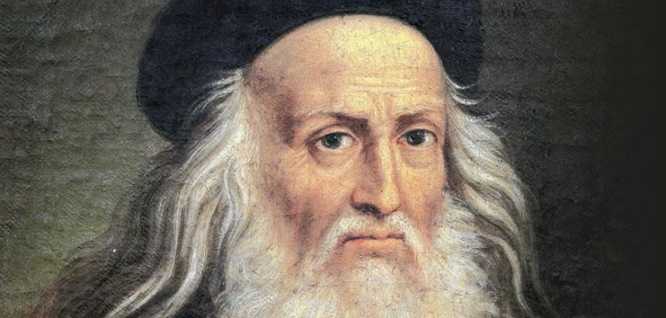
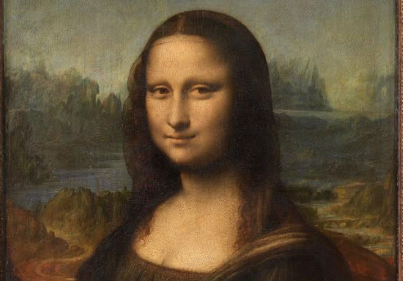

Destacou-se como pintor, inventor, cientista, engenheiro, anatomista, arquiteto e estudioso da natureza. É considerado um dos principais representantes do Renascimento, período entre os séculos XV e XVI marcado pelo desenvolvimento das artes, da ciência e do pensamento humano.
Infância e origem
Leonardo nasceu em 15 de abril de 1452, na cidade de Anchiano, perto de Vinci, na República de Florença (atual Itália). Era filho de Ser Piero da Vinci, um notário, e Caterina, uma camponesa. Desde criança demonstrou grande curiosidade, talento para o desenho e interesse pelos fenómenos da natureza.
Por ser filho ilegítimo, não teve uma educação tradicional completa, mas aprendeu observando o mundo ao seu redor e desenvolvendo habilidades práticas.
Formação artística
Por volta dos 14 anos, Leonardo tornou-se aprendiz na oficina do famoso artista Andrea del Verrocchio, em Florença. Ali aprendeu pintura, escultura, mecânica e técnicas de criação artística.
Com o tempo, superou muitos dos seus mestres e tornou-se um artista independente. Uma das suas primeiras obras importantes foi “A Anunciação”.

Principais obras de arte
Leonardo produziu algumas das pinturas mais famosas da história:
A sua técnica revolucionou a pintura, especialmente pelo uso do sfumato, uma técnica que cria transições suaves entre luz e sombra.

Leonardo como inventor e cientista
Embora muitas invenções não tenham sido construídas naquele período, os seus desenhos demonstravam uma visão extraordinária para o futuro.
Estudos de anatomia
Leonardo estudou profundamente o corpo humano, realizando desenhos detalhados de músculos, ossos, órgãos e sistemas do corpo. Os seus estudos contribuíram para o avanço da anatomia e da medicina.
Ele acreditava que compreender a natureza era essencial para compreender a humanidade.
Últimos anos e morte
Em 1516, Leonardo foi convidado pelo rei Francisco I da França para viver no país como artista e conselheiro. Passou os seus últimos anos no Castelo de Clos-Lucé, próximo de Amboise.
Leonardo da Vinci morreu em 2 de maio de 1519, aos 67 anos.
Legado
Leonardo da Vinci deixou um legado que ultrapassa a arte. Ele representa a união entre criatividade, ciência e conhecimento. A sua vida demonstra a importância da curiosidade, do estudo contínuo e da busca por novas descobertas.
Até hoje é lembrado como o símbolo do “homem renascentista”, alguém capaz de dominar várias áreas do conhecimento e transformar a maneira como o mundo pensa e cria.